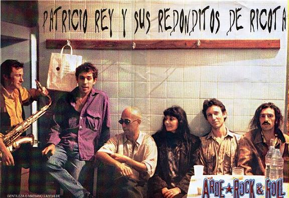

Patricio Rey y sus Redonditos de Ricota, también conocidos como Los Redondos, fue un grupo musical de rock argentino formado en La Plata en el año 1976 e integrado, en su mayor parte, por el Indio Solari, Skay Beilinson, Semilla Bucciarelli, Walter Sidotti y Sergio Dawi. En esta sección te presentaremos datos que aquel ricotero deberia saber, aquello que no sabemos acerca de la banda, y significados de esas canciones que nos reconfortan el corazon con solo escuchar la guitarra de skay o la melodiosa voz del indio.
El nombre "Patricio rey y sus redonditos de ricota" se origino atra vez de un personaje ficticio que forma parte del imaginario de la banda de rock. Usualmente se confunde este personaje con Carlos "El Indio" Solari.
Solari transmitía los gnómicos mensajes de Patricio Rey, el secreto ideológo y mentor del grupo, a sus seguidores. Si bien en algunas entrevistas los integrantes de la banda hablaban sobre el personaje como un sujeto que los ayudó económicamente en sus comienzos, que tenía mucho poder y que cada tanto se comunicaba con ellos; se supone que "Patricio Rey no existe; Patricio Rey son todos", tal como lo definió Carlos Solari.
Carlos Alberto Solari conocido como Indio Solari, es un músico argentino, miembro fundador de este grupo. En 1976, en la ciudad de La Plata, forma Los Redondos junto a Skay Beilinson. La banda editó diez álbumes de estudio hasta su disolución en 2001. Sigue vigente como artista hasta el dia de hoy y nos lo hizo saber lanzando su ultima cancion con Wos llamada "QUEMARÁS"
En 1976, en la ciudad de La Plata, forma Los Redondos junto a Skay Beilinson. La carrera de Solari entró en un prime hasta 2004 cuando presentó el primer álbum del Indio Solari y los Fundamentalistas del Aire Acondicionado titulado El tesoro de los inocentes (Bingo fuel). En el 2007 lanzó su segundo disco Porco rex, en 2010 el tercero El perfume de la tempestad, en 2013 el cuarto Pajaritos, bravos muchachitos, y en 2018 el quinto El ruiseñor, el amor y la muerte. Su último recital en vivo fue en Olavarría en 2017, en el cual murieron dos personas debido a la gran cantidad de público que hubo ese día. Desde entonces ha trabajado en su estudio y ha publicado libros. En 2020, ofreció un concierto en el que participó de manera virtual mediante técnicas holográficas.
Eduardo Federico Beilinson, más conocido como Skay Beilinson (La Plata, Provincia de Buenos Aires, Argentina 15 de enero de 1952) es un guitarrista, cantante y compositor argentino, es considerado como un guitarrista esencial del rock de Argentina. Es reconocido por haber sido miembro y fundador del grupo musical argentino Patricio Rey y sus Redonditos de Ricota, junto al Indio Solari. El pseudónimo Skay surgió gracias a su amiga Marta Minujín.
En los redondos comenzaron sus actuaciones en vivo en 1977, como una exhibición de rock teatral, con toda una troupe circense de monologuistas, payasos y bailarinas desnudistas, que entre canciones subían al escenario a hacer sus números. Progresivamente fueron deshaciéndose de los números teatrales, algo que terminaron de descartar tras la recepción de su álbum debut, Gulp! (1985). A partir de ahi, se establecieron únicamente como un grupo musical.
| Álbumes | Fecha de lanzamiento |
| Gulp! | 1985 |
| Oktubre | 1986 |
| Un baion para el ojo idiota | 1988 |
| ¡Bang! ¡Bang!....Estas liquidado | 1989 |
| La mosca y la sopa | 1991 |
| Lobo suelto | 1993 |
| Cordero atado | 1993 |
| Luzbelito | 1996 |
| Ultimo bondi a finisterre | 1998 |
| Momo sampler | 2000 |